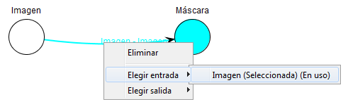

Asignar entradas y salidas
Las entradas y salidas se asignan desde el menú de opciones del enlace (click derecho sobre el enlace). Una vez allí
aparecerán dos opciones: Elegir Entrada y Elegir Salida, donde aparecerán todas las entradas y salidas disponibles. En
caso de que una entrada o salida ya esté seleccionada aparecerá escrito en dicha salida, y las entradas al nodo destino
que estén en uso (bien por el propio enlace, bien por otros) también aparecerán con un mensaje indicándolo.

Si la opción de auto-asignar entradas y salidas está activa, se asignarán automáticamente las entradas y salidas, siempre
y cuando sean únicas (no existan más entradas o salidas) y la entrada al nodo destino no esté ya en uso (asignada).